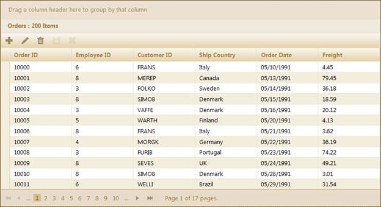
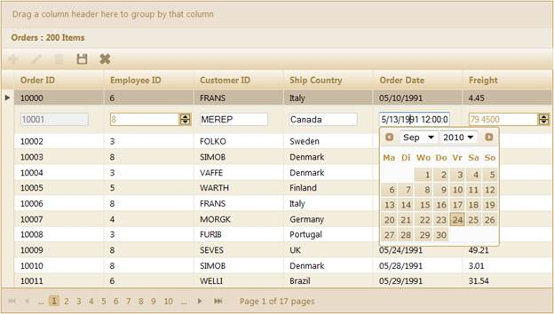
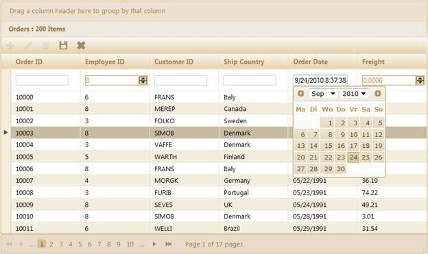
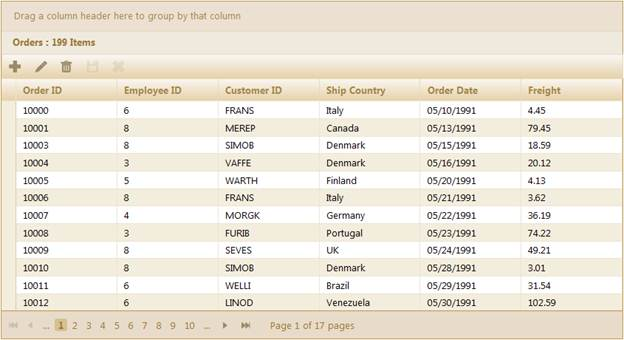

The steps to work with the editing feature through GridBuilder are as follows:
1. Add the MicrosoftMvcValidation.debug.js file in the master page.
|
[Site.Master] <head runat="server"> <title><asp:ContentPlaceHolder ID="TitleContent" runat="server" /></title> ……… <script src="<%= Url.Content("~/Scripts/MicrosoftMvcValidation.debug.js") %>" type="text/javascript"></script>
</head>
|
|
[_Layout.cshtml]
<head runat="server"> <title><asp:ContentPlaceHolder ID="TitleContent" runat="server" /></title> ………
<script src="@Url.Content("~/Scripts/MicrosoftMvcValidation.debug.js ")" type="text/javascript"></script>
</head> |
2. Create a model in the application (Refer to Getting Started>Adding a Model to the Application).
3. Create a strongly typed view (Refer to How to>Strongly Typed View).
4. Create the Grid control in the view and configure its properties.
5. Set the JSON action mode using the ActionMode method.
6. Enable editing by using the Editing method and configure the editing properties such as AllowNew, AllowEdit, and Allow Delete as displayed below.
|
View [ASPX] <%=Html.Syncfusion().Grid<Order>("Grid1") .ActionMode(ActionMode.JSON) .Editing( edit=>{ edit.AllowEdit(true, "Home/OrderSave")// Specify the action method which will perform the update action. .AllowNew(true, "Home/AddOrder")// Specify the action method which will perform the insert action. .AllowDelete(true, "Home/DeleteOrder");// Specify the action method which will perform the delete action.
}) columns.Add(p => p.OrderDate).Format("{0:dd-MM-yyyy}"); %> |
|
View [cshtml]
@{ Html.Syncfusion().Grid<Order>("Grid1") .ActionMode(ActionMode.JSON) .Editing( edit=>{ edit.AllowEdit(true, "Home/OrderSave")// Specify the action method which will perform the update action. .AllowNew(true, "Home/AddOrder")// Specify the action method which will perform the insert action. .AllowDelete(true, "Home/DeleteOrder");// Specify the action method which will perform the delete action.
}) columns.Add(p => p.OrderDate).Format("{0:dd-MM-yyyy}");
|
7. Essential Grid allows adding new records through toolbar items. In this example, AddNew, Edit, Delete, Save, and Cancel buttons have been added as toolbar items as displayed below.
|
View [ASPX]
<%=Html.Syncfusion().Grid<Order>("Grid1") .ActionMode(ActionMode.JSON) .ToolBar(tools => { tools.Add(GridToolBarItems.AddNew)// Toolbar item for Insert record. .Add(GridToolBarItems.Edit)// Toolbar item for Editing record. .Add(GridToolBarItems.Delete)// Toolbar item for Deleting record. .Add(GridToolBarItems.Update)// Toolbar item for save changes. .Add(GridToolBarItems.Cancel);// Toolbar item for Cancel request.
}) |
|
View [cshtml]
@{
Html.Syncfusion().Grid<Order>("Grid1") .ActionMode(ActionMode.JSON) .ToolBar(tools => { tools.Add(GridToolBarItems.AddNew)// Toolbar item for Insert record. .Add(GridToolBarItems.Edit)// Toolbar item for Editing record. .Add(GridToolBarItems.Delete)// Toolbar item for Deleting record. .Add(GridToolBarItems.Update)// Toolbar item for save changes. .Add(GridToolBarItems.Cancel);// Toolbar item for Cancel request. }).Render(); } |
8. Specify the Primary property which uniquely identifies the grid record.
|
View [ASPX]
<%=Html.Syncfusion().Grid<Order>("Grid1") .ActionMode(ActionMode.JSON) .Editing( edit=>{ edit.PrimaryKey(key => key.Add(p => p.OrderID)); // Add the primary key to primary key collections.
})
|
|
View [cshtml]
@{
Html.Syncfusion().Grid<Order>("Grid1") .ActionMode(ActionMode.JSON) .Editing( edit=>{ edit.PrimaryKey(key => key.Add(p => p.OrderID)); // Add the primary key to primary key collections.
}).Render();
|
9. Specify the GridEditing mode through the EditMode() method.
|
View [ASPX]
<%=Html.Syncfusion().Grid<Order>("Grid1") .ActionMode(ActionMode.JSON) .Editing( edit=>{ edit.PrimaryKey(key => key.Add(p => p.OrderID)); // Add primary key to primary key collections.
})
|
|
View [cshtml]
@{ Html.Syncfusion().Grid<Order>("Grid1") .ActionMode(ActionMode.JSON) .Editing( edit=>{ edit.PrimaryKey(key => key.Add(p => p.OrderID)); // Add primary key to primary key collections.
}).Render();
|
10. Render the view.
|
Controller public ActionResult Index() { return View(); } |
11. In order to work with editing actions, create a Post method for Index actions and bind the data source to the grid as given in the following code.
|
Controller [AcceptVerbs(HttpVerbs.Post)] public ActionResult Index(PagingParams args) { IEnumerable data = new NorthwindDataContext().Orders.ToList(); return data.GridJSONActions<Order>(); } |
12. In the controller, create a method to add new records to the grid as displayed below. In this example, the repository method Add() is being created to insert records to the database. Refer to the repository action method displayed below.
|
Controller [AcceptVerbs(HttpVerbs.Post)] public ActionResult AddOrder(EditableOrder ord) { // Repository action method, Add is used to insert records into the datasource. OrderRepository.Add(ord);
// After adding the record into database refresh the grid. var data = OrderRepository.GetAllRecords(); return data.GridJSONActions<EditableOrder>(); } |
13. In the controller, create a method to save changes as displayed below. In this example, the repository method Update() is used to update records in the data source.
|
Controller [AcceptVerbs(HttpVerbs.Post)] public ActionResult OrderSave(EditableOrder ord) { // Repository action method, Update used to update the records into the datasource. OrderRepository.Update(ord);
// After saving records into the datasource refresh the grid. var data = OrderRepository.GetAllRecords(); return data.GridJSONActions<EditableOrder>(); } |
14. In the controller, create a method to delete records from the database as displayed below. In this example, the repository action Delete() will delete the record from the data source.
|
Controller [AcceptVerbs(HttpVerbs.Post)] public ActionResult DeleteOrder(int OrderID) { // Repository action Delete(), deletes the given primary value record from the datasource. OrderRepository.Delete(OrderID);
// After deleting, refresh the grid. var data = OrderRepository.GetAllRecords(); return data.GridJSONActions<EditableOrder>(); } |
15. Run the application. The grid will appear as shown below.

Figure 154: Grid with Toolbar Options for Editing, Inserting, and Deleting Records

Figure 155: Grid with Inline Row Editing

Figure 156: Grid with Inline Row Inserting

Figure 157: Grid after Deletion of Row with OrderID 10002
 GridMode
Configuration
GridMode
Configuration